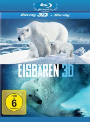

 
 IMDB-Wertung: 0.0 / 10
IMDB-Wertung: 0.0 / 10  Metascore:
Metascore: 
Find showtimes, watch trailers, browse photos, track your Watchlist and rate your favorite movies and TV shows on your phone or tablet!
Jahr: 1978
Dauer: 50 Minuten
FSK: 12
Land: West-Deutschland Studio: Tonspuren: DTS - ,
Untertitel:
Auflösung: 1080p (1920x1080) Größe: 6594 MB
Genre: Dokumentation
Regisseur: Wilm ten Haaf
Drehbuch:
Soundtrack:
Darsteller:
 Hannelore Elsner als Louise
Hannelore Elsner als LouiseDatei: X:\Dokumentationen\Tiere\Eisbären (1978, FSK12, 1920x1080) 3D.mkv seit 27.04.2015
Festplatte: HD Serien(SU-Z)+Dokus+Musik
 Es gibt insgesamt 37 Filme in der Gruppe 'Dokumentationen\Tiere'
Es gibt insgesamt 37 Filme in der Gruppe 'Dokumentationen\Tiere'